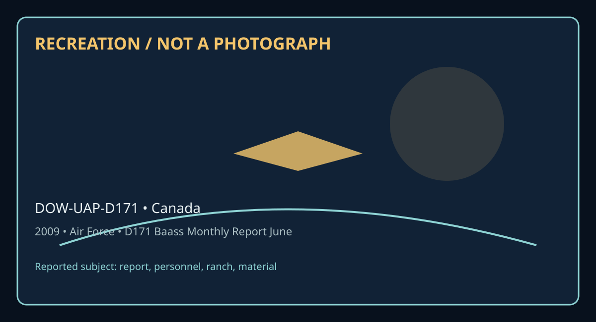

Release 07 / archival case file / DOW-UAP-D171
D171 Baass Monthly Report June 2009
This d171 baass monthly report june places a report, personnel, ranch, material thread in a 2009 Canada record.
ID: DOW-UAP-D171
Filename:
DOW-UAP-D171-BAASS_Monthly_Report_June_2009.pdfDate marker: 2009
Location: Canada
Agency or collection signal: Air Force
Pages read: 134

RECREATION / NOT A PHOTOGRAPH. The diagram is an interpretive editorial aid, not source imagery.
What this document says
The opening page's extracted text begins: “111/EIIIW111111,II/I 111,11c1111,1c1ITll/111 ® ly 9, 2009 ~”
Across the 134 pages, the recurring terms are report, personnel, ranch, material. Those details belong to this file, not to a generic case template. Page-level reading follows:
- Page 1: 111/EIIIW111111,II/I 111,11c1111,1c1ITll/111 ® ly 9, 2009 ~
- Page 2: June 2009 Report Bigelow Aerospace Advanced Space Studies (BAASS) Tl1is infor 111atio11 is propr ieta1ya11d co11fide11tial and ca, 11 ,ot be disse111i11ated or used without prior writtefl eoAseAt from the Operatiflg MaAager of BAASS•.
- Page 3: PREFACE This Progress report summarizes BAASS activities and progress for the period June 1-June 30, 2009. TABLE OF CONTENTS Topics covered in this report are the following: Progress on Recruiting Staff ................................................................................. Page 3 Progress on New BAASS Facilities....................................
- Page 4: Progress on Staff Recruitment • Between June 1-30, 2009 in response to job advertisements in multiple on line locations, BAASS received a total of 461 resumes. • The first level of screening (removal of applications on the basis of too frequent job changes, those obviously inexperienced to work at BAASS, non-US citizens etc) was conducted on all resumes. •
- Page 5: BAASS Employees AAP Person 4 Administrator AAP Person 7 Deputy Administrator Significant Part-time Fulltime BAASS Employees BAASS Employees AAP Person 8 Senior Analyst level V i:..AP Person 52 Senior Engineer level Ill AAP Person 9 Lead Program Manager AAP Person 53 Executive Assistant RTB AAP Person 10 Lead Program Manager AAP Person 54 Corporate Attorney A
- Page 6: AAP Person 42 Executive Secretary AAP Person 43 Receptionist AAP Person 44 Director of security IAAP Person 45 Security Officer AAP Person 46 Security Officer AAP Person 47 Security Officer AAP Person 48 !Security Officer AAP Person 49 Security Officer AAP Person 50 Security Officer AAP Person 51 Security Officer Utah Ranch Security Officers We are optimisti
- Page 7: Progress on New BAASS Facilities During the month of Jun~AAP Person 4 jthe BAASS administrator, made substantial progress on two major real estate projects in line with anticipated future BAASS needs. (1) Underground Vault: The need for a highly secure underground vault operated by BAASS became apparent in line with a BAASS priority to pursue and acquire rec
- Page 8: organization is close to outgrowing the current BAASS facility. Accordingly, the BAASS administrator began planning for this eventuality late last year (2008) and in the past several months has personally visited and inspected close to fifty separate buildings for sale located in different areas of the Las Vegas Valley with a view to purchasing a new facilit
- Page 9: Progress by Earthtech on Production of 24-30 Position Papers on Physics of Advanced Aerospace Vehicles On December 31, 2008 BAASS awarded a contract to Earthtech lnternationallAAPPerson 57 Ito deliver 24-30 position papers that will be based on expanding and focusing on strategically important sub-projects from the 12 position papers previously delivered by
- Page 10: Contributor Organization Topic Due Date IAAP Person 58 EarthTech lntem'I Antigravity Studies 5/1/2009 IAAP Person 75 !Consulting SC-mediated gravity experimentation 5/1/2009 IAAP Person 69 Positronics Research Matter-antimatterenergy source 5/15/2009 IAAP Person 7 4 Icons. Warp drives 5/15/2009 IAAP Person 73 Wayne State Univ. Brain-machine interfaces 5/15/2
- Page 11: IAAP Person 78 Univ.of Texas/ Austin Metamaterials/signature reduction 6/10/2009 I IAAP Person 80 lntem'I Acad. Astronautics Statistical Drake equation 5/1/2009 I IAAP Person 81 Wayne State Univ. Field effects/biologica Itissues 5/15/2009 I IAAP Person 79 DoD consultant Laser weapons 5/31/2009 I IAAP Person 64 Northrop Grumman (ret.) Pulse-power-based weapon
- Page 12: BAASS has Contracted to Purchase Information on UAPs from MUFON In February 2009, BAASS executed a Purchase order with MUFON that entitles BAASS to: (a) receive notification of significant reports on UAP sightings from anywhere in the United States within hours, (b) receive timely reports from MUFON investigators regarding investigations of these incidents (
- Page 13: MIJF©N ~ -•UFONo- Mutual UFO Network, Inc. I'843( a)(2) June 29, 2009 BAASS IAAP Person 4 Dea~AAP Person 4 We are in receipt of your letter dated June 25, 2009 regarding the Purchase Agreement Contract and suggested changes. Let me begin by saying that we at MUFON are very pleased with the positive changes we have been able to implement as a result of our ag
- Page 14: and would not have happened without BAASS and MUFON working together towards a common goal of rapid response. In regards to your suggestion to move funding to a mid-term level, we certainly understand your rationale for wanting to do so. Please understand that as we aggressively pursue other avenues of finding, and attracting, new cases that our support and
- Page 15: lllllllrIIIIINII 11,111EIINIIITIIIEI• June 25, 2009 AAP Person Dear 105 This letter is to address the status of the MUFON Purchase Agreement contract that was executed between BAASS and MUFON in February 2009. Firstly, we are pleased to see that MUFON is moving ahead with plans to execute contracts with TV and other media as a means of raising Its national p
- Page 16: MUFON from April and May 2009 have reached a plateau at $23,803.95 and $23,812.00 respectively. For these reasons, we propose a Phase II funding level between July 1 and October 31, 2009 of $25,500 per month. This sum, when added to the unspent MU FON allocations (estimated at approximately $120,000 for February/March, April and May 2009} should be more than
- Page 17: SUMMARY AND INVESTIGATIVE REPORTS FROM MUFON FOR MAY and JUNE 2009 As requested, the following cases are investigative summaries from MUFON of cases for which they deployed SIP team members during May and June 2009. AAP Person 109 Case # 16421 _I . I1843(a)(3) GPS Coordinates: .....______________. Location: Scammon, Kansas CAT 2 Deployment Date of Event: 4-0
- Page 18: "Razzor" cell phone. 10:30 am I followed ***** and ***** out to the sight of the encounter. We drove from Pittsburg, Kansas to Scammon where they live, and the sighting occurred. Scammon is about 10 miles down Hwy 160. We decided that the best way to re-enact the night of the sighting was for me to enter their vehicle sitting in the front seat and have *****
- Page 19: ~ phone. They decided to drive home and retrieve *****'s phone to see if the younger son would answer a call from his older brother. When ***** came out ofthe house, he noticed that the craft was back. This time he said "mom let's chase it!" They raced towards it and found it at the end of the street. They jere at 1a43(a)(2) and it was 5 blocks down dead cen
- Page 20: 2:30 pm I decided to visit the Crawford County Sheriffs department where I was told the dispatched officer on scene was from. 3:30 pm I left the sheriffs department to head for the actual Sheriffs Department where the dispatch came from, Cherokee county. There was some confusion by the locals as to what Sheriff Department had jurisdiction over the town of Sc
- Page 21: lanterns. I asked the sheriff the name of the individual who told him it was Chinese lanterns and the name of the person that had set them off. Sheriff *******told me he would get those names for me later. I also asked the sheriff the name of the officer that was dispatched that night and he said it was Deputy *******. Then, the Sheriff left. April 8, 2009 9
- Page 22: IAAP Person 109 CONTACTS: 1. Officer ********* 2. Train engineer of Burlington/Northern 3. Sheriff ********* 4. ***** ***** Sr. 1843(a)(2) s;EJ and ************* 6. Sheriff's witness who reported Chinese Lanterns 7. Person Sheriff claimed Set off 3 Chinese lanterns that night Wind direction 01 :23 am: 58.1 degrees/42.4 degrees Dew pointl29.60in pressure/ Win
- Page 23: On April 25, 2009 a ST AR team CAT 2 Deployment was activated on this case. STAR team lnvestigatorfP Person 103 Iwas assigned as lead investigator. IAAP Person 59 I MUFON (Mutual UFO Network) STAR Team Coordinator I Manager IAAP Person 59 I 1843 WITNESS NARRITIVE: (Witness: <a>(2> "*****" *****) i left my house in ola arkansas, at approx. 520 am to pay a 111
- Page 24: Discussion with Dispatcher: late this afternoon uncovered the following: At 5:20 am witness was on way to work Apr. 20-09 . The, witness is a Nurse. Witness was driving on highway encountered large Triangular Shaped craft - proximity within 100 feet at closest point. Witness said triangular vehicle was size of a B-1 bomber (her husband was in US Air force an
- Page 25: lines which sometimes crossed over the road. ***** had not even noticed them. There is also a power plant nearby, Arkansas Nuclear On AAP Person 59 has instructed us to contact the security department there.) .... ta!kedto 1~~~(~)(2) ***** about signing the media release. ***** does not want her name used or her image. We may use her voice and refer to her a
- Page 26: ~ experience (rather than something that was done to her.). She went out and had a cigarette. She felt very irritable....with raw nerves. She managed to get through the day and forgot about it until noon. When she got home from work, she started researching on the internet. She didn't tell her son until a couple of days later. It was ~> 43(a) who encouraged
- Page 27: were and continue grazing. This appears to be quite abnormal behavior for deer. The weeds in the pasture wereCJbut this was explained by the fact AAP Person that they had used weed kUler.- took a number of pictures, 103 particularly of the power lines. ey are 180,000 KV power lines - a direct feed from Arkansas Nuclear One. In one of the pictures, he zoomed
- Page 28: AAP Person 103 ***** drew a picture of the craft that she saw. I ---~Ia1sochecked -~~~**'s sinus cavity area with a magnet to see if she might have had an implant there but found nothing abnormal. ~; Per_~.?.~ + - -··· ldid look at the cell phone and it appears that the cell phone was functional however the battery's internal fuse was blown. This is not a co
- Page 29: ***** did say that there have been some other strange events though. Most notably for her are the significant number of people who have gone off the road and hit her fence. There have also been two occasions when whole sections of her fence have been pulled up and moved. In 9/06, a large section of a fenc,e was just pulled out and laid down, That fence inclu
- Page 30: ------ th• I • W • t 1843(a) t h k t th H ·t any mg e se arises. e are going o as (2) o c ec ou e en age Room of the Dardanelle Public Library regar mg ndian activities in this area .. 3 The GPS location is 1843(a)( ) 1843(a)(3) In order to complete this report we would like to send a FOIA to both the power plant and the FAA. We want to find out if we can le
- Page 31: STAR Team Coordinator/ Manager IAAP Peraon 59 I Investigator Report: I. Initial Meeting with Witnesses I set up an interview with********** and********** at 12:00 P.M. on Monday June 3, 2009. I called to let them know I was on the way. There was no answer so I left a message. I arrived at their apartment on time and knocked on the door. There was no answer t
- Page 32: not apart of some rouge intelligence organization.***** wanted to dominate the investigation. So for a little while I was the "punching bag". But after 15 minutes or so he became comfortable enough that I could conduct a proper interview. II. The Prairie Dogs Shortly before the incident while***** was driving he noticed a prairie dog sticking its head out of
- Page 33: see anything outside nor inside, although I was stillfacing the passenger. The stereo was on but I don't remember any sound either just glowing bright light. I have no idea how long the form took to pass completely thru the car. The car seemed to move back andforth with a jolt. The next thing that I remember is that my hands grabbed the steering wheel and I
- Page 34: that was it. A Few things:#1. The radio was playing in the car quite loud, however when the light moved through the vehicle there was no noise, not even the sound ofthe car on the road. #2 When the light was in the vehicle, it was all you could see. No definition to anything, just white light. After it was over I did not see spots like one normally would aft
- Page 35: END Report cM~ Case Report MUFON SIP Deployment Case# 17125 Case Type: Cat 3 lnvestigator:IAAP Person 112 I MUFON ID# 12509 843 3 GPS COORDINATES1....' - - (a-)(- )_______ COORDINATES ACCURACY: Exact location of witness at the time of the encounter which was within 100 feet south of the touchdown zone. LOCATION: Buffalo, Oklahoma DATE OF EVENT: 5/18/2009 TIM
- Page 36: • Witness first noticed that lights were flying very low (going way to slow to be an airplane) and appeared to have just flown over Buffalo • Witness described object with blue, red, and white strobe lights {were large and in line with each other) with quite a bit of distance in between all three. The middle light was white and strobe very slowly, and the re
- Page 37: • About a 1/4 mile down the road, witness turned and looked over shoulder, and the lights were no where in sight. • Witness indicates behind the corral a large portion of the grass is laid down, and Witness took some pictures of that area. Witness Narrative I was feeding my horses last Sunday about 12:30am. I was standing facing west, all of the sudden some
- Page 38: stopped looked over my shoulder, the lights were still sitting in the same place, NOT MOVING. I couldn't go towards town without passing close by the lights, so I turned south and laid the pedal down. About a 1/4 mile down the road, I turned and looked over my shoulder, and the lights were no where there or anywhere in sight. Since the incident I have driven
- Page 39: Two of her horses had a material "splattered" on their backs. It did not appear to be lather as the horses were not worked or ridden. Further more, "Red" the alpha horse had developed 4 perfectly round, white spots on its coat. Three on her front flank in the form of a triangle and one lone spot on her rear flank. Now, the witness knows her animals and swear
- Page 40: necessitated anotlher trip to the field tomorrow. Arrived back at the motel at about 6:00 PM. It should be noted at this time that the area (Buffalo, Oklahoma located in the county of Harper} is completely surrounded by hundreds of wind turbines. These things seem to be constantly working. 5/31/09 I met with the witness about 8:30 AM. and secured specimens.
- Page 41: investigator. Investigator hand carried samples through security and they were not X-rayed. Samples were placed in new clean zip lock bags and transported and stored at ambient temperature (no refrigeration). (Knife and scissors were used to collect samples and were cleaned and dried with alcohol swab after use, for each sample taken) Soil Samples: ► Control
- Page 42: and was labeled "White Spot RED 5-31-09" Horse is identified by the name RED ► Hair sample taken from splatter area on horse, cut with scissors approximately 100 pieces 1/4" placed in a clean new Zip lock bag 3" X 3" and was labeled "Splatter Sample RED 5-31-09" Horse is identified by the name RED Second horse - identified by TRESSIE ► Hair sample taken from
- Page 43: DATE OF EVENTS: #17360 various dates prior to 6/2/09 #17478 on 6/13/09 TIME OF EVENT: #17360 Various times, generally 10:30 p.m. -11:30 p.m. #17478 11:30 p.m. ( ) Exact ( X) Approximate On 6/14/09, a STAR team CAT 2 Deployment was activated on a case in the Trego, WI area (Case #s 17360 and 17478). STAR Team lnvesti ato AAP Person 103 was assigned as lead in
- Page 44: 8:00 a.m. - 9:00 a.m. E-mail to*****, watched video which***** provided to us regardingl1843(a)(2) I 9:30 a.m. - 10:15 a.m. Work on report. 3 5:30 p.m. - 12:15 a.m. Met with *****, significant otherl;~t (a) land son, *******. Further examination of her pictures and skywatched. Took approximately 150 photos which will be examined at home using adobe photoshop
- Page 45: 1843 2 843 2 ***** was born o~.__ _ _<a_H_l ______land was raised in l.... 1_ _ <_al_<_l ___...., Her immediate family was comprised of her mother, father and a brother who is two years older. She described her brother as highly intelligent, despite the fact that he is autistic. She attributes her patience, acceptance and ability to look at things in a diffe
- Page 46: The tavern across the street burned down several months ago (it continues to operate out of a garage) and ***** felt a "huge release of negative energy" afterwards. Her life changed; she slept better and she wasn't getting negative images or voices anymore. It was after this that she got the idea to go outside and take pictures of the sky. ***** tries to foc
- Page 47: on the light and she remembers feeling a tingle and a pulse similar to the machine gun sound that she heard and reported in case no. 17478. In the dream, ***** said that "they" communicated with her saying that they were going to give her a lot of information. They said that there was so much information that they were going to program it so that she wouldn'
- Page 48: acorn shape, yet she did not include this shape in case no. 17360. ***** reads what other people have seen on the MUFON website and feels that she sees many of those things. Sometimes when she sees certain shapes, she feels that they're trying to make her understand something but she's "not getting it." She feels there is content in what she is capturing wit
- Page 49: coming up to her giving her a handshake.... meeting her. The object then took off to the south. They "left with a message that they would be back." The only picture** *** got was of horizontal red lights as it left.Game-out-of .!843(a)(2) the house and he said that he felt an intense vibration~didn't pickam1th.ing 1843(~)(2) up. The length ofthe event was fi
- Page 50: We have now also been informed tha¼~>4~(a ) !saw moving lights since we left. We still have to go through the pictures w 1c we took during the skywatch. ***** is very emotional and drained after these ex eriences. She feels that she's loosing time - and says that it's hard to explain. 1143(a ) however, has not noticed anything in ***** that reflected a diffe
- Page 51: Military installations: Military areas (with red route indicating low level flight areas) are noted below. Spooner is in the center and Trego, the location of the witness, is only 9 miles away from that location. ...llionSVml>Oll ., Mtlca,y oau .i. ' AlrJ>Otl -4 ..:'J MonorAlfPO<l • J MilQtV ()pe<aoont AfU • J Spooal Utio Alr• pace • J Low•Levet TritifWliQ M
- Page 52: On the next page, you will find the Google Earth view of the location where the object flew over on 6/13/09 (indicated by the yellow stick oin \ 1843(a)(3) 49
- Page 53: Below is the barn as viewed from the witness' perspective when the sighting occurred. It is also the object indicated with the yellow stick 50
- Page 54: MUf©N ~ -UFONe1wo<k Case Report MUFON SIP CAT 3 Deployment Case numbers 16818 and 16819 113 Field Investigators: ....IM_P_Pe_r_so_n________________ d. t 1843(a)(2), 1843(a)(3) Gps Coor ma es: Location: Fallon, Nevada Date of Event: 07 May, 2009. Time of Event: 9:30 P.M. Approximate {21:30) On Friday May 8, 2009 a STAR team CAT 3 Deployment was activated on t
- Page 55: • ***** ***** (age 18) is a High School Student and is near graduation. ***** 's father is a security officer, l1843(a)(2) 1843(a)(2) ---------------- 1 1 • ***** ***** (age 18) is a High School graduate and is currently unemployed. *****'smother is al1843(a)(2) 1843(a)(2) --------------- 1 1 Both witnesses are well-adjusted young adults and are not given
- Page 56: appeared to be landing or crashing SO degrees magnetic north on an azimuth of the above GPS coordinates, which would put it in the vicinity of Depp Rd (see further down report.) ***** was very emphatic and noted to investigators that he grew up in Fallon near the Naval Base area all of his life and has seen "every type" of aircraft, and these did not resembl
- Page 57: Also***** noted that when the object passed them, she could see two horizontal "grills" on the back of the object. Investigator questioned her further, she said, "Yeah, like the grills on a toaster or heater" meaning red glowing heating elements. Investigator notes that the objects were shaped almost horse shoe, having two rear ends and a "grill" on each end
- Page 58: Investigator made note of the fact that according to witnesses, the objects were almost completely silent except for a slight hum at all times. The lights were a bright yellow/orange. Also noted is the fact the Depp Rd. location is near a dairy farm with several hundred head of Holstein dairy cattle, a herd of llamas, goats, dogs, etc. Both ***** and ***** n
- Page 59: distance. There was a semi truck behind them, and the object was behind and above that. Then the object disappeared. It takes about 10 to 15 minutes to go from Sandhill Rd to town. (Sandhill Rd is about 8.5 miles from Depp Rd) ***** and***** noted that it took them an hour and twenty minutes to get back to town that night. They thought they parked on Depp Rd
- Page 60: possible confirmation of an "unspecified aircraft incident". This may be the new code words used by our military in place of UFO. Investigator later tried to talk to***** 's father, but he did not want to discuss the event. By the next day it seemed as if the kids were becoming reluctant to talk any further. Since we had all the information we needed, we dec
- Page 61: ***** did not have anything show up (Black Light scan}. ***** then noted she had three "itchy" bumps on her left leg, which she did not want to show investigator since she was wearing slacks. (embarrassed to show body area} ***** 's right fore-arm had several glowing areas. (Black Light scan}. He scrubbed very hard twice trying to get these marks off, but th
- Page 62: NOT COMPLETE Summary • Dispatcher notes 5-26-09 - ***** ***** called back, • Witness: doesn't know why he woke up except he felt immediate fear and compelled to go outside. • The light was up high, large as a baseball with colored bars on all four sides (light blue on each side, red on top, blue on bottom), they did not change size or shape, object in the mi
- Page 63: l1843(a)(2) ICase# 16539 CMS Log Number US-04162009-0016 Date of CMS report: April 20, 2009 Date of events: April 16, 2009 1843(a)(2), 1843(a)(3) Place of sighting: Residence r 843(a)(2), 1843(a)(3) I Case Category 2 ~ p Person 108 I Report b y: ......_________STAR Field Investigator l BACKGROUND INFORMATION OF THE WITNESSES: l1843(a)(2) Iis a laboratory d
- Page 64: with his fiancee ***** ***** , a radiology technician, both have degrees in chemistry. INTERVIEW - SEQUENSE OF EVENTS: April 16th , 2009, approximately 03:15 AM in the morning, ***** was awakened by loud humming and she than woke up ***** to have him check out where this stirange sound was coming from. ***** walked from bedroom to bedroom to look through the
- Page 65: Question: "Were ~: )1~) area streets cleansed/swept on the night or early morning around 03:00am on April 1 ffh?" Reply from DPW 4/20: "We definitely would not sweep/clean during those hours. " 2 • Called 4121: 7-Eleven (24hrs}l1843 (a)( ) I Store attendant~ stated that nothing strange was heard or seen. 2 • Called 4/21: Exxon/Shop (24hrs) l1843(a)( ) 11 a43
- Page 66: 1843(a)(2) Area military bases and airports (from Pasadena): • Baltimore Washington International Airport (BWI) 8 miles NW • Fort Meade - 9 miles W/SW • Patuxent Naval Air Systems Command- 50 miles South • Dover Air Force Base, DE - 95 miles East. AREA TEMPERATURE / NIGHT OF THE SIGHTING April 16th Temperature: 39.0 °F Visibility: 9.0 miles Dew Point: 36.0 °
- Page 67: 1843(a)(2) 1843{a)(2) l1843 2 (a)( ) j1ooking through bedroom window where he saw triangular UFO hover above. 64
- Page 68: AAP Person ······· ···· 10s ······ Artist rendition of the UAV seen b ...___ __, - Illustration byl~: Person CONCLUSION: ***** was perplexed and a bit shaken by this incident and wondered if this was an US military aircraft, why would they built such a thing! He also stated that most of the home occupants who reside on his street are either with the military
- Page 69: Case# 17526 Investigator: I....AA_ P_ Pe-rs_o_n_11_4_____________ 3 GPS COORDINATES 1843(aH ) 1843(a)(3) COORDINATES ACCURACY: Driveway of witness' house. Six feet from where sighting occurred. Entity was seen 43 yards from sighting location. LOCATION: Grants Pass, Oregon DATE OF EVENT: June 16, 2009 TIME OF EVENT: 10:30 pm local (Pacific Time) ( ) Exact ( x
- Page 70: • As the car got closer; across the street the witness saw a pair of eyes as if an animal's eyes were reflecting in the light except they were a deep purple. • After the car passed, the witness looked back to the spot where he saw the eyes, and was shocked to see a whitish humanoid figure stand up and walk along the neighbor's fence across the street. • Witn
- Page 71: tree lines. (See photos attached) He said they flashed and flickered appearing and disappearing in multiple spots but in the same general location in the western sky. Using a compass, I verified the location of the orbs were southwest. All the orbs were diffused, appearing in the clouds and under the cloud deck. The witness also saw a crescent shaped object
- Page 72: The road between the two properties is paved higher and the ditch is not apparent from his front porch. I took pictures ofthe area across the street from the sighting location and measured the distance with a laser rangefinder. The distancefrom the witness to where the entity was sighted is 43 yards. I walked across the street and saw where the "eyes" were s
- Page 73: The nearest military installation is Klamath Falls about 120 miles to the east. Medford International is about 30 miles to the south, and Grants Pass Airport is to the north. On 6/22/09 I called the Grants Pass Sheriff's office to ask ifthere were any reports made on 6/16/09 ofanything unusual seen that night. I was told no reports were logged in for anythin
- Page 74: BALLESTER-GUASP RESULTS INFORMATION QUALITY INDEX=> 100% = 1 Information Acquisition 1. At the site < 2 hrs 2. Person to person Interview >= 1 hr RELIABILITY INDEX => 63.5% = 0.635 Number Of Witnesses => 2 Witness Profession => College Graduate or Military Familial/Social Relationship=> Family or Single Witness Geographical Relationship => Together or Single
- Page 75: Case# 16720 CAT 2 MUFON Deployment MP Person 103 r p Person 1 IJ<I Investigators: .I 1843 3 1. GPS COORDINATES : 1_- -(a->(_>___________. COORDINATES ACCURACY:_(Approximate point of reference for descent} 1843 2 1843 3 2. GPS COORDINATES : (a)( ), (a>( > COORDINATES ACCURACY: (Exact location of home of Witnesses, 1a43(a)(2), 1a43(a)(3) 1843 3 3. GPS COORDINA
- Page 76: •• On Friday May 2, 2009 a STAR team CAT 2 Deployment was activated on three cases in the***** AZ area. Cases 16720- 16721-16726 STAR Team lnvestigatorlAAP Person 103 Iwas assigned as lead investigator. IAAP Person 103 I MUFON (Mutual UFO Network) STAR Team Coordinator/ Manager Investigator Report: 5/3/09 '{6'f Per_~on 5:30 p.m. LJtalked with***** ***** to d
- Page 77: I Director of AK-Chin Law Enforcement for Gaming Control. He obtained the name ofl1843(a)(2) We were also informed that nothing could be picked up from the ground and that we should be very careful not to do anything which might be disrespectful to the residents of this area. We then went to the***** residence. An older woman, who identified herself as*****
- Page 78: 8:20 a.m. - Receiv,ed call fro~~P Person jIeft to meet for breakfast. ~P/~erson 9:05 a.m. - Arrived at IHOP where we met wit~AAP Person 13 IAAP Person 16 1andl-~7f ~P P:_rson I ·· ·· IWe discussed the fact that we had been to the police department an'a---------1 were working with local people who have ties to Indian security to gain access to AAP Person lndi
- Page 79: 4:30 p.m. -Arrived back at motel. Started writing reports of daily events. AAP Person Contacted! Iabout continuing inability to contact witness. 59 5/7/09 10:00 a.m. - Once again drove out to the***** home. 10:35 a.m. - As we approached the home this time, we noticed that the dark colored car was gone and a red truck and another car were parked near the hom
- Page 80: ***** said that his father 1It 3 (a) was on the couch and called***** in to go out and watch the event that was going to happen that night with the moon and Venus. ***** said he saw the moon but not Venus. What he did see was an amber colored ("like sodium vapor street lights") light, but that it appeared much larger than a street light and it "was dimming a
- Page 81: _ 1843(a)(2) 1843(a)(2) 1843(a_H?.L 1843(a)(2) 1843(a)(2) not have a good sense of direction. He looked at the lights and tried to calculate their distance and felt they were much further away than ***** did. I -- -- lfelt-~~~~(~)(2) that the lights were 10-12 miles away from where they were standing. He said the lights moved around and while they were somew
- Page 82: AAP Person ···-·-···--····"·· ·103' We then went out to the front yard so tha(3coulala"l<epict-~·;;;~·~;e the range finder and get the GPS coordinates. The distance from wherel -- -- +was _184~(a)(2) standing to the top of the roof of the house down the street where the light was sighted was 187 feet, with a 13.8 degrees angle. 1843(a)(21. J -- Isaid that wh
- Page 83: After the event, ***** went on Google Earth and felt that the lights were near the Estrella Mountain area. After*** ** showed us where he saw the light s, we drove to the police department to tell them that we now had the actual witness with us and that we knew where the lights were sighted. As we drove along the side road we looked at the area where ***** t
- Page 84: Case# 16721 CAT 2 MUFON Deployment Investigators: I....AA_P_P_e_rso_n_1_03_ ____.IIAAP Person 104 1843(a><3 GPS COORDINATES : > COORDINATES ACCURACY: Exact spot where Witness stood on 11843(a)(3) Iobserving lights l 1843 3 LOCATION: ...._ _(_al_( _l _____________, DATE OF EVENT: 4/28/09 TIME OF EVENT: 9:45 p.m. ( ) Exact ( X ) Approximate On Friday May 2, 20
- Page 85: 104 Investigator Report: 5/3/09 AAP Person ••• • 6:30 p.m . .;.Dcalled ***** to try to set up meeting time. ***** was uncertain of when she will be available; to call again. 5/4/09 12:55 p.m. - Called*****; unable to set anything firm as she is waiting for doctor to call her to come in. To check back with her in a.m. 5/5/ 09 9:00 a.m. -Telephone message left
- Page 86: color of streetlights. It seemed odd because the lights were stationary, not moving left or right. She felt sure it wasn't a helicopter because it was far too big for that. She also noticed that the lights were pulsating "slightly." The lights weren't high, being just above the horizon and didn't seem normal. She waited and watched to see if they would move.
- Page 87: Relative to her hearing,***** said that she does not have any hearing problems and she heard nothing related to this event. Regarding the sky on that evening, ***** said there was a "little bit of light covering ...nothing major ...moon not bright or light enough to see anything." It was clear without much humidity. When asked about the size of the object if
- Page 88: Weather report: Visibility >10 Miles C ~ ~~" '':f=C 0~ _!j _ lj 1! t ;; 0 ~ -=----------::: I - -18 midnight 2 3 4 S 6 7 8 9 10 11 noon 1 2 3 4 S 6 7 8 9 10 11 1 In Hg hPa Barome1r1c Pressure 29.9 ~ i1013 ~J ~ ,1~ 29.7 ______...._...._..................................i ......i---.i------------........ 1006 midnight 2 3 4 S 6 7 8 9 10 11 noon 1 2 3 4 S 6 7 8
- Page 89: Investigators: I._AA_P_P_e_rs-on_1_03__.._IAA_ P_Pe-rs_o_n_1 o_4 _ ___,J 1843 1843 GPS COORDINATES : <aH2>· <aH3> COORDINATES ACCURACY: Home of Witnesses, Marana, AZ LOCATION: Home of Witnesses, Marana, AZ DATE OF EVENT: 4/28/09 TIME OF EVENT: 9:05 p.m. ( X ) Exact ( ) Approximate On Friday May 2, 2009 a STAR team CAT 2 Deployment was activated on three case
- Page 90: AAP Persotl 104 . ... ~: Person S:;.~~~~6~00p~m~-·Dnd the~ !talked with ***** ***** on the telephone; ***** advised us of need for confidentiality in this case. .JAAP Person 59 7:00 p.m. -Telephone conversation wit,, 1 ...______ 5/4/09 6:00 a.m. - Telephone call from ***** ***** re new sightings in area. 6:10 a.m. - Telephone call fro1AAP Person 59 10:45 a.m
- Page 91: the neighbor's house obtained with a ran e finder was 174 feet. The GPS 1843 2 1843 3 coordinates ar (a)( ), (a)( ) The object was just about at the height of the moon. No stars or other objects could be seen between the three lights even with binoculars; witness therefore feels that it was a solid object. The object appeared to be very large, about the size
- Page 92: Husband then described how the lights would come on and off again. He described the lights going on and off in a "violent" manner. Three lights might go on then "bang" there were two, then three, then two. He said that at this time he got a "scary" feeling because it seemed "synchronized, as if it was one." The usual flight pattern from Tucson is from North
- Page 93: said that it was a 1/3 or a crescent moon. What drew her attention was that she saw lights that seemed to her like sparklers - like her uncle used to light for her. She said that it was really pretty like the 4th of July. She did not feel there was any pattern to the lights but that they were "all over the place under the moon." She started talking on the te
- Page 94: ·~ :~·~-=?-- .q J -- - L J...-, 1 > 4 i 6 It I 1111-1 I 1 t \',II 1~ 11 "" ... ; .... ~· m•1• ..,. ' "' I..---------,---.-,---,-....,....... ....,,, 'It t I) t I ltll~I) I 4 t. l I I 101, Case# 17546 CAT 2 MUFON Deployment Investigators: _IAAP Person 103 .. _ _P_ -so_ _ _ _ _ _ _ _ _ _ __ ILIAAP er n_104 ___,J 1843(a)(2), 1843(a)(3) GPS COORDINATES: COORDINA
- Page 95: LOCATION: I1843(aJ(2J, 1843(a)(3) DATE OF EVENT 6/18/09 TIME OF EVENT: 12.54 a.m. (X) Exact ( ) Approximate On 6/19/09, a STAR team CAT 2 Deployment was activated on a case in the Poynette, WI area (Case #17546). STAR Team lnvestigato,fAAP Person 103 Iwas assigned as lead investigator. STAR Team lnvestigato~AAP Person 104 !assisted. AAP Person 59 MUFON (Mutu
- Page 96: laser range finder (driveway which faces south= 415 feet long}. Verified sensor light on garage facing south and up (range set for 30 feet). Multiple calls to State Director andlAAP Person 59 I ******* (DOB 8/10/58} lives in a very nice home which is about 200 feet from a river with her fiancee, *****, who is currently in Pakistan. *****was the one that sugg
- Page 97: She then looked up and thought "what in God's name is that?" She saw 3 white lights moving in a straight line up her driveway; they were "perfectly spaced, perfectly linear." She initially thought of Orion's belt but the spacing was far bigger. There was also a red/white flashing light that was on the left hand rear side - at about a 45 degree angle to the l
- Page 98: When asked about her emotions after the event,***** said that she has been shot at so this didn't seem scary to her. She thought to herself "well this is weird, this is kind of cool." She was, however, very impressed at the size of the object ~P Pers~-~-~nc;t_k~pt looking to see if she could see anything going up. She decided that she needed to consulfWithl
- Page 99: C 10 F Temperarure Dew Point Normal Hlgh/LDw ~6;;0~- .:~~ midnlght 2 3 4 5 6 7 8 9 10 11 noon 1 2 3 4 5 6 7 8 9 10 11 1 In Hg hPa Baromeh'lc Pressure 29.9 f-= j 1013 =~ L ~===:=\::-,----:-=::J~: midnight 2 3 4 5 6 7 8 9 10 11 noon 1 2 3 4 5 6 7 8 9 10 11 1 \Mnd Gust •~• ~•~ c I I ~.L ~= kmth midnight 2 3 4 5 6 7 8 9 10 11 noon 1 2 3 4 5 1 \Mnd Dir de 360.0 .
- Page 100: 1843(a)(2) 97
- Page 101: BAASS Deployment to Brazil Beginning at the end of June, and spanning early June, several BAASS personnel were deployed to Brazil. The purpose of the deployment was two-fold: (a) a team was dispatched to the South of Brazil to meet with multiple organizations and individuals in Sao Paolo and Brasilia who were considered important future contacts for BAASS an
- Page 102: North Team Senior lnvestigator(s) AAP Person 12 AAP Person 11 Translators(s) AAP Person 32 AAP Person 31 AAP Person 32 .. Synopsis: ..·•• AAP Person 11 1□ ·· On May 25, 2009 the north team comprised of.________, I l1843(a)(2) IAAP Person 31 Iand I deployed to Brazil. The mission was to meet with the established contacts and interview as many witnesses to the
- Page 103: ~,..,....~""""""'...._..................he north team arrived in Fortaleza. Contact was made with to announce our arrival and confirm the meeting time and L------r.;;-:.::;~:.;-----, location. 1843(a)(2) advised that he would meet us at the hotel in the morning and s end the day with us at the CPU headquarters. Contact was made with 1843(a)(2) to announce ou
- Page 104: 2 With the perm1ss1on from l1843(a)( ) Ithe team continued to take photographs of various types of objects to include: some type of chip taken out of a human, which was planted by an "alien", meteors, angle hair, burned rocks taken from landing sites, metal fragments taken from a crash site and dirt samples taken from landing sites. The CPU group also opened
- Page 105: -------- About 1630 hours !1843(a)(2) Ireturned to the hotel to escort us to the conference. Upon arriving at the conference, it was clear that we were the center of the night. I noticed what appeared to be a television camera crew set up as well as a reported from a local radio station filming and recording the entire night. During the conference several pe
- Page 106: ■ Cases are titled usually by the name of the witness: 1. 1843(a)(2) - 8/10/1997 2 1843(a)(2) - 02/11/1999 3. !1843(a)(2) I - researched 06/01/2000 4.l1843(a)(2) Ioccurred in Nov./1999 researched 06/01/2000 sr843(a)(2) 1- 25/11/1997 6.11843(a)(2) ~ researched 14/12/1998 7.11s43<aH2> I - occurred 20/11/1998 researched 16/12/1998 8_1843(a)(2) 1- 2410511999 1 9
- Page 107: 18.I1843(a)(2) - a Friday of November 1992 19. I1843(a)(2) 24/05/2009~I18-43-(a_>c_2>_____...... • 55 .CDR Files (Image files) o For the moment these files have not been able to be opened on BAASS computers o Each file varies in size o Preliminary analysis: They are bi-weekly reports on regarding cases the CSPU is or has investigated o Possible content: • Im
- Page 108: 1. These people saw OVNis 2. Edic;ao 4 7, 1a Quinzena de Janeiro de 2007 .cdr 3. Edic;ao 48, 2a Quinzena de Janeiro de 2007.cdr 4. Edic;ao 49, 1 a Quinzena de Fevereiro de 2007 .cdr 5. Edic;ao 50, 2a Quinzena de Fevereiro de 2007 .cdr 6. Edic;ao 51, 18 Quinzena de Marc;o de 2007.cdr 7. Edic;ao 52, 2a Quinzena de Marc;o de 2007.cdr 8. Edic;ao 53, 1a Quinzena
- Page 109: 33. Edic;ao 80, 2a Quinzena de Maio de 2008.cdr 34. Edic;ao 81, 1 a Quinzena de Jun ho de 2008.cdr 35. Edic;ao 82, 2a Quinzena de Junho de 2008.cdr 36. Edic;ao 83, 1a Quinzena de Julho de 2008.cdr 37. Edic;ao 84, 2a Quinzena de Julho de 2008.cdr 38. Edic;ao 85, l a Quinzena de Agosto de 2008.cdr 39. Edic;ao 86, 2a Quinzena de Agosto de 2008.cdr 40. Edic;ao 8
- Page 110: , - AAP Person 31 •.,. -M,...._ •-------~• - -----..~,.,...,..,,-------, AAP- --- On May 31, 2009 Person 11 and ·· returned to the CPU headquarters and spent the day scannin 1843(a)(2) case files.~ -- and.. l trave.led toAAP Person 1843( )(2) 32 ,,, .. a----- Cachoeira to-meet-with_ ____, Upon a~riving we met with ·-:· -Wh.o:-b~-~--~--l;_~:~~\~13(a)(2) prep
- Page 111: Files fro1....1_a4_3_(a-)(-2) ________________________, DVD is broken into 9 different files: 1. Appearances in Contendas 2. Expedition to Felao 1843(a)(2) 3 ... Exped~tion wi-th.....,~ - .....lfrom O POVO 4. Astrological Images 5. Images fromj1843(a)(2) 6. Images of Object 7. Observation in Cisterna 8. 0 POVO Report 9. Videos (Video Testimony & TV Reports)
- Page 112: • Need better headphones in order to hear dialogue. DVD is recorded at a very low volume. • 11843(a)(2) • On his way home when a light appeared (was either walking with his horse or riding it. Does not specify) • About 1.5-2m in diameter • About 3 m in altitude • Very bright. So bright he could not look directly at it. • Does not know where it came from. • T
- Page 113: --------- On June 1, 2009 Due to the amount of information l1843(a)(2) Ihad and the time we had left in Brazil, I decided the team would return to the CPU and copy as much information as possible to take back with us. The rest of the day was spent at the CPU gatherin~1843(a)(2) !files. All the team members utilized personal computers to accomplish the task,
- Page 114: o Oct. 5, lcarai o Jan 24, 1976 Oiticica o Dec. 19, 1977, Sao Luiz do Curu o Oct. 28, 1978, Goias o August 16, 1980, Quixeramobim o July 17, 1980 Paraiba o May 20, 1982 Canoa Quebrada o July 9, 1983, Horizonte o Aug 83, Fortaleza 0 Aug 83,l1843(a)(2) o Nov. 3, 1984, Morro Branco o April 10, 1986, Fortaleza o Oct. 18, 1986, Fortaleza o February 8, 1987 Mucuri
- Page 115: translated and analyzed to see where it fits in with BAASS guidelines. There is still a tremendous amount of information at the CPU headquarters in Fortaleza, which is available only to BAASS. Issues with CPU, Fortaleza: 1. The CPU has investigated some 3418 case which BAASS has been given permission to access and copy; however, the CPU files are in total di
- Page 116: ... construction at the mine, BAASS may want to stay in contact with the public officer to learn of new sightings. RecommendaUons for Colares area: Due to the limited statements made by the CPU about the ongoing activity in the Coloares area. My recommendation would be that when the weather forecast is good, a team of BAASS investigators deploy to the area t
- Page 117: b. Release 3 - 1843(a}(2) c. e ease - nve ope 2. l1843(a)(2) Irecent(< 5 years old) cases information (pages/size -TBD) translate 3. High Pri Mil Released Documents a. Release 3 - Envelope 2 (22 pages electronic)- Visually scan for I1843(a)(2) Idocuments and translate Envelo e 5 (69 pages electronic)- Visually scan for documents and translate (24 pages) -
- Page 118: 1843(a)(2) Note: Detailed reports of information gathered to follow. Respectfully Submitted IAAP Person 12 115
- Page 119: Project Northern Tier Summary NORTHERN TIER INFO 29 June 2009 -IAAP Person 11 The Northern Tier team was formed in late April 2009. The team originally consisted of me andAAP Person 95 ~ho has since left BAASS). The Team was expanded to four additional personnel with geographic areas ,of responsibility. That breakdown is as follows: Minot AFB, ND ------ ....
- Page 120: Was there any local law enforcement involvement? STATUS=PENDING/IN PROGRESS Open Source searching? Attempt to determine what documentation the local Police completed Once identified requests copies The AFOSI reporting indicates "civil police" were notified and responded. This could be the Oscoda Police Department; Iosco County Sheriff's Office; or the Michig
- Page 121: "Project Northern Tier is one of the sponsor's top priorities, making it one of IAAP Person 4 I and hence one of ours. The following is provided as a Road Map as of this date for the effort on Northern Tier (NT). The hope is this will allow some amount of focus of effort as we move forward. The end game for NT is for us to provide the sponsor with a comprehe
- Page 122: We must ensure all our efforts are properly documented. Obviously all interviews will be fully documented. Efforts to locate a specific witness should also be documented to indicate the number of calls or emails forwarded. All levels of effort, even those which are not successful must be properly recorded. Level of effort is what I am getting at here. We mus
- Page 123: Project NORTHERN TIER - Minot Air Force Base - IMP Person 17 I Minot AFB had a variety of suspicious or unusual incidents occur at or near their air base being documented since 1956. The first report documented supposedly occurred on 10/28/1956 and involved a B52 crew observing a bright light while on a training mission NW of Minot. In researching the data,
- Page 124: 300 unidentified witnesses listening to the event. There was at least one security person observing the UFO and there are an unknown number of witnesses at SAC headquarters awaire of the incident. !1843(a)(2) Iis alive and living in Maryland but he said his crew commander has passed away. Total witnesses are least three hundred unidentified missile silo offi
- Page 125: Nov. 10., 1975- This last event involved at least one UFO 'buzzing' the base and the ICBM's and the radar facility. The documentation stated that there were three unidentified people that observed this activity. They were from the site or locals according to the reports. The report was sent to NORAD by an unidentified person at the Minot AFB. The report was
- Page 126: hour work week, I have probably spent an average of 25 hours on the Minot research and the remaining time on the other tasks that I work on. Pro'ect NORTHERN TIER - Wurtsmith Air Force Base AAP Person 39 WITNESSES AND PHONE CALLS In reviewing the initial WAFB case, twelve (12) known witnesses were identified. To date, writer has made 20-25 phone calls in an
- Page 127: The other witness, related that he was not sure if he could talk about the incident, and would not give a statement. He did inform writer that he did make an 'official' report, which could be obtained through the FOIA. WITNESSES THAT ARE DECEASED During the on-set of this investigation, while trying to locate various witnesses, it was discovered two of the w
- Page 128: . AAP Person 41 Pro ect NORTHERN TIER -Lorin Air Force Base Based on all currently available research and previously evaluated United States Air Force and Department of Defense documents received via Freedom of Information Act (FOIA) requests; the following statistical - demographic information has been obtained for identification of potential witnesses to t
- Page 129: • One hundred ninety-two (192} have either non-working or disconnected telephone numbers • One hundred fifty-seven were identified as being either the wrong person entirely or individuals who never served in the United States Air Force or United States military • Eighty-six (86} individuals have been identified as needing additional information to make a via
- Page 130: • Utilizing West Law search database I found over 18,726 potential matches. {Note 8 of the searches maxed out the search quota of 2000.) • Utilizing my personal search database Locateplus I was able to narrow 12 of the searches down to 35 and 3 of the searches came to 4,000 + potential matches. Summary Utilizing the two databases I find Locateplus to be more
- Page 131: AAP Person 9.5 After my initial review the documents supplied byLJ·a-nd--th;--;i~;line ~P P~r.:?~- provided bySenioi:JAv-estiga.tGrF Ithe following numbers of witnesses have been identified for locating and possible follow up investigation: • During the time frame of August through December 1975, there are six (6) names discovered in the various documents fr
- Page 132: BAASS Continues Study on Information on UAPs released by the British, Canadian, French and Danish Governments • Over the past eighteen months, The Ministry of Defense (MoD) in the United Kingdom has released approximately 7297 pages of files pertaining to the performance of alleged UAPs in British air space. More recently the British MoD released a second gr
- Page 133: • Throughout 2005-2008, GEIPAN, a department of CNES (French civilian space agency), released about 100,000 pages comprising the investigative reports from approximately 1650 cases, including 6000 eyewitness interviews involving UAPs, the majority of which have been investigated by the Gendarmerie. BAASS translators/analysts are currently sorting and codifyi
- Page 134: Conclusion Significant progress has been made in training and initially deploying BAASS field investigative teams during the month of June. Further, especially following the recent deployment of BAASS personnel to Northern and Southern Brazil, BAASS has begun to acquire significant information on UAP activity in Brazil. Recently, BAASS has initiated contact
Historical context and disclosure schema
Read in context, this record belongs to the 2009 information environment: Air Force paperwork, a Canada setting, and the reporting conventions visible in the source. Its broader disclosure value is procedural as well as anecdotal: it shows how an observation, material question, investigation, or analytical program was routed, described, and preserved. That makes it comparable to other Release 07 records without collapsing unlike evidence into one event.
Evidence limits
The source establishes that this document exists and records what its authors or quoted witnesses wrote. It does not, by itself, prove the identity, performance, origin, or physical reality of the reported subject. Extraction preserves wording but cannot restore missing attachments, authenticate provenance, or independently validate testimony. Interpretations beyond the page-specific record remain hypotheses.
Source: supplied PDF in research/tranche-07. This article is a research aid, not a claim that the reported object was non-human.